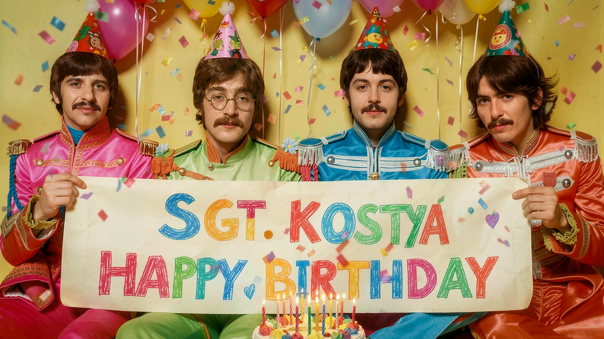

When I get older, losing my hair
Many years from now,
Will you still be sending me a valentine,
birthday greetings, bottle of wine?
If I'd been out till quarter to three,
Would you lock the door?
Will you still need me, will you still feed me,
When I'm sixty four? Ooh
You'll be older too.
Ah, and if you say the word,
I could stay with you.
I could be handy mending a fuse
When your lights have gone.
You can knit a sweater by the fireside,
Sunday mornings, go for a ride.
Doing the garden, digging the weeds,
Who could ask for more?
Will you still need me, will you still feed me,
When I'm sixty four?
Ev'ry summer we can rent a cottage
In the Isle of Wight if it's not too dear.
We shall scrimp and save.
Grandchildren on your knee;
Vera, Chuck and Dave.
Send me a postcard, drop me a line,
stating point of view.
Indicate precisely what you mean to say,
yours sincerely, wasting away.
Give me your answer, fill in a form,
Mine forevermore.
Will you still need me, will you still feed me,
When I'm sixty four? Ho!